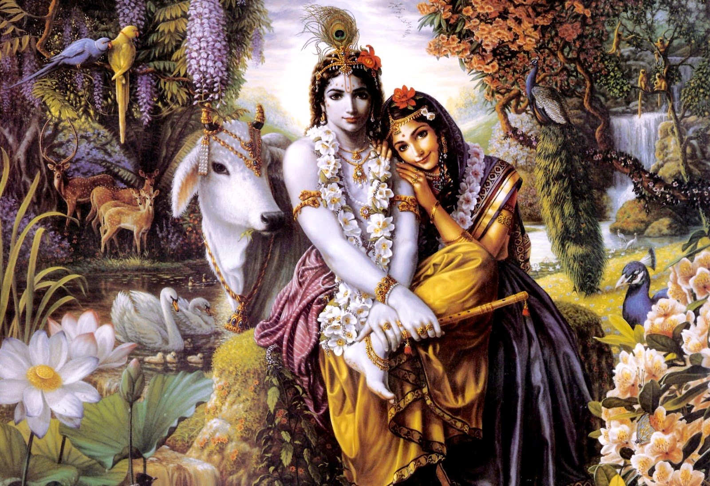

<!-- about -->
<div class="about" id="about">
    <div class="container">
        <div class="col-md-7 about-left wow fadeInLeft animated" data-wow-delay=".5s">
            <h3>HÔN NHÂN HOÀN HẢO</h3>
            <h4> Giới thiệu</h4>
            <p>


                Tất cả các chúng sinh, từ cây cỏ cho đến con người, đều sinh ra từ sự kết hợp của hai giới tính.  Đây là qui luật của vũ trụ.  Ngay cả với loài vi khuẩn sinh sản vô tính, hai cực âm và dương vẫn được biểu hiện trong quá trình giảm phân, khi  ADN được tách ra thành hai chuỗi độc lập trước khi chép ra hai phiên bản mới.
            </p>
            <p>
                Từ hàng nghìn năm trước, mọi tôn giáo đều che giấu một bí ẩn: đấy là tình dục. 
            </p>


        </div>
        <div class="col-md-5 about-left wow fadeInRight animated" data-wow-delay=".5s">
            <a href="gioi-thieu.shtml"></a>
            
        </div>
        <div class="col-md-12 about-left wow fadeInRight animated" data-wow-delay=".5s">
            <p>
                Nói một cách cụ thể hơn, tình dục là một yếu tố không thể thiếu được trong quá trình sinh ra cơ thể linh hồn, cũng như trong quá trình sinh ra cơ thể vật chất.Chúng ta chỉ có thể đạt tới được mức độ cao nhất trong việc phát triển linh hồn khi ta sống trong tình yêu đích thực với một người khác giới tính.


                <a href="gioi-thieu.shtml"><b>Đọc thêm...</b></a>
            </p>
        </div>
    </div>
</div>
<!-- /about -->